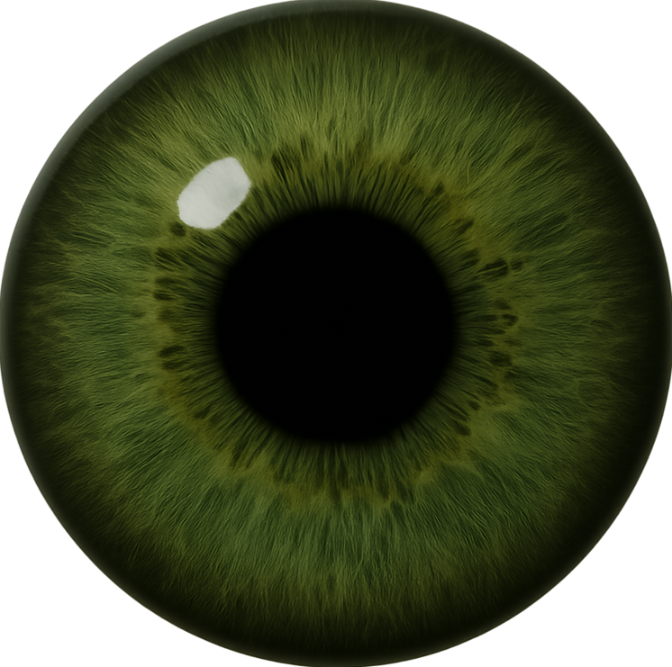

☰
Hand Gestures Guide
Show your hand
– The eye awakens
Move your palm
– The pupil follows you
Hide your hand
– The eye closes
Point your finger
– The pupil turns red
Make a fist
– The eye blinks shut
Peek-A-Pupil
🔇
